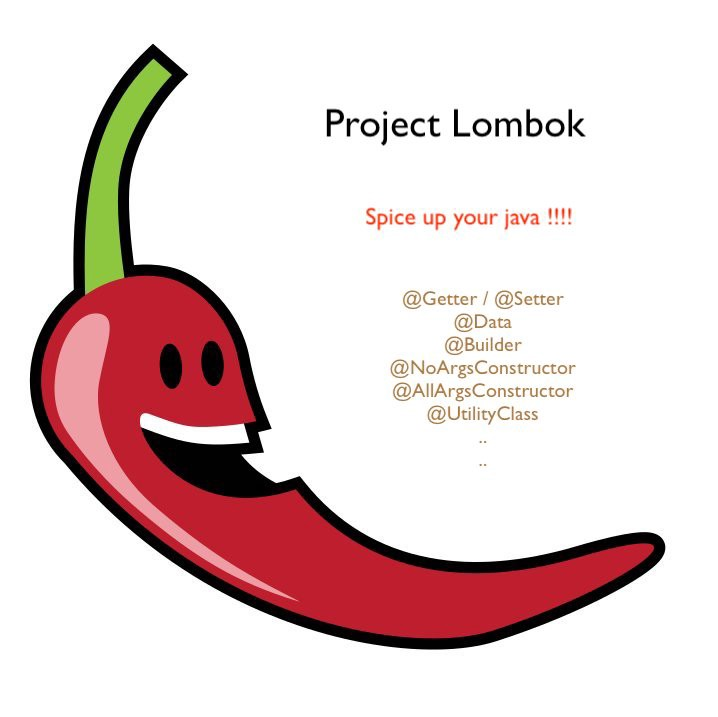

<!DOCTYPE html>
<html lang="en">
  <head>
    <meta charset="utf-8" />
    <meta name="viewport" content="width=device-width, initial-scale=1.0, maximum-scale=1.0, user-scalable=no" />

    <title>reveal-md</title>
    <link rel="shortcut icon" href="./favicon.ico"/>
    <link rel="stylesheet" href="./dist/reveal.css" />
    <link rel="stylesheet" href="./dist/theme/white.css" id="theme" />
    <link rel="stylesheet" href="./css/highlight/zenburn.css" />

  </head>
  <body>
    <div class="reveal">
      <div class="slides"><section ><section data-markdown><script type="text/template"># Errori ed eccezioni</script></section><section data-markdown><script type="text/template"></script></section><section data-markdown><script type="text/template">
### definizione errore
<ul>
    <li style="font-size:24px">"Errore" è una sottoclasse della classe built-in "Throwable".</li>
    <li style="font-size:24px">Gli errori sono le condizioni critiche che si verificano a causa della mancanza delle risorse di sistema e non possono essere gestite dal codice del programma. </li>
    <li style="font-size:24px">Gli errori non possono essere recuperati con alcun mezzo perché non possono essere creati, lanciati, catturati o replicati.</li>
    <li style="font-size:24px">Gli errori sono causati a causa di un errore catastrofico che di solito non può essere gestito dal programma.</li>
    <li style="font-size:24px">Gli errori sono sempre di tipo non controllato, in quanto il compilatore non ha alcuna conoscenza in merito alla sua occorrenza.</li>
    <li style="font-size:24px">Gli errori si verificano sempre nell'ambiente di runtime.</li>
    <li style="font-size:24px">La conseguenza dell'errore è che il programma viene terminato in modo anomalo.</li>
</ul></script></section><section data-markdown><script type="text/template">
### definizione eccezione
<ul>
    <li style="font-size:24px">"Exception" è anche una sottoclasse di classe built-in "Throwable".</li>
    <li style="font-size:24px">Le eccezioni sono le condizioni eccezionali che si verificano in un ambiente di runtime. La maggior parte delle volte le eccezioni sono causate dal codice del nostro programma.</li>
    <li style="font-size:24px">Le eccezioni possono essere gestite dal programma stesso, poiché le eccezioni sono recuperabili.</li>
    <li style="font-size:24px">Le eccezioni vengono gestite utilizzando tre parole chiave "try", "catch", "throw". </li>
<ul></script></section><section data-markdown><script type="text/template">
### eccezione
```java
    try{
        // ...
    }catch ("tipo eccezione 1"){
        // ...
    }catch ("tipo eccezione 2"){
        // ...
    }
```</script></section><section data-markdown><script type="text/template">### esempio senza "try" "catch"

```java
public class Main {
  public static void main(String[ ] args) {
    int[] myNumbers = {1, 2, 3};
    System.out.println(myNumbers[10]); // errore
  }
}
```
```
output
Exception in thread "main" 
        java.lang.ArrayIndexOutOfBoundsException: 10
        at Main.main(Main.java:4)
```</script></section><section data-markdown><script type="text/template">
### esempio con "try" "catch"

```java
public class Main {
  public static void main(String[ ] args) {
    try {
      int[] myNumbers = {1, 2, 3};
      System.out.println(myNumbers[10]);
    } catch (Exception e) {
      System.out.println("Something went wrong.");
    }
  }
}
```
```output
"Something went wrong."
```</script></section><section data-markdown><script type="text/template">### "try" "catch" "finally"
```java
public class Main {
  public static void main(String[] args) {
    try {
      int[] myNumbers = {1, 2, 3};
      System.out.println(myNumbers[10]);
    } catch (Exception e) {
      System.out.println("Something went wrong.");
    } finally {
      System.out.println("The 'try catch' is finished.");
    }
  }
}
```
```
output
Something went wrong.
The 'try catch' is finished.

```
</script></section><section data-markdown><script type="text/template">### differenza Errori ed eccezioni

<table style="border-collapse:collapse;border-spacing:0" class="tg"><thead><tr><th style="border-color:inherit;border-style:solid;border-width:1px;font-family:Arial, sans-serif;font-size:22px;font-weight:bold;overflow:hidden;padding:10px 5px;text-align:left;vertical-align:top;word-break:normal">Base per il confronto</th><th style="border-color:inherit;border-style:solid;border-width:1px;font-family:Arial, sans-serif;font-size:22px;font-weight:bold;overflow:hidden;padding:10px 5px;text-align:left;vertical-align:top;word-break:normal">Errore</th><th style="border-color:inherit;border-style:solid;border-width:1px;font-family:Arial, sans-serif;font-size:22px;font-weight:bold;overflow:hidden;padding:10px 5px;text-align:left;vertical-align:top;word-break:normal">Eccezione</th></tr></thead><tbody><tr><td style="border-color:inherit;border-style:solid;border-width:1px;font-family:Arial, sans-serif;font-size:14px;overflow:hidden;padding:10px 5px;text-align:left;vertical-align:top;word-break:normal">Di base</td><td style="border-color:inherit;border-style:solid;border-width:1px;font-family:Arial, sans-serif;font-size:14px;overflow:hidden;padding:10px 5px;text-align:left;vertical-align:top;word-break:normal">Un errore è causato dalla mancanza di risorse di sistema.</td><td style="border-color:inherit;border-style:solid;border-width:1px;font-family:Arial, sans-serif;font-size:14px;overflow:hidden;padding:10px 5px;text-align:left;vertical-align:top;word-break:normal">Un'eccezione è causata dal codice.</td></tr><tr><td style="border-color:inherit;border-style:solid;border-width:1px;font-family:Arial, sans-serif;font-size:14px;overflow:hidden;padding:10px 5px;text-align:left;vertical-align:top;word-break:normal">Recupero</td><td style="border-color:inherit;border-style:solid;border-width:1px;font-family:Arial, sans-serif;font-size:14px;overflow:hidden;padding:10px 5px;text-align:left;vertical-align:top;word-break:normal">Un errore è irrecuperabile.</td><td style="border-color:inherit;border-style:solid;border-width:1px;font-family:Arial, sans-serif;font-size:14px;overflow:hidden;padding:10px 5px;text-align:left;vertical-align:top;word-break:normal">Un'eccezione è recuperabile.</td></tr><tr><td style="border-color:inherit;border-style:solid;border-width:1px;font-family:Arial, sans-serif;font-size:14px;overflow:hidden;padding:10px 5px;text-align:left;vertical-align:top;word-break:normal">Gestione</td><td style="border-color:inherit;border-style:solid;border-width:1px;font-family:Arial, sans-serif;font-size:14px;overflow:hidden;padding:10px 5px;text-align:left;vertical-align:top;word-break:normal">Non c'è modo di gestire un errore dal codice del programma.</td><td style="border-color:inherit;border-style:solid;border-width:1px;font-family:Arial, sans-serif;font-size:14px;overflow:hidden;padding:10px 5px;text-align:left;vertical-align:top;word-break:normal">Le eccezioni vengono gestite utilizzando tre parole chiave "try", "catch" e "throw".</td></tr><tr><td style="border-color:inherit;border-style:solid;border-width:1px;font-family:Arial, sans-serif;font-size:14px;overflow:hidden;padding:10px 5px;text-align:left;vertical-align:top;word-break:normal">Conseguenze</td><td style="border-color:inherit;border-style:solid;border-width:1px;font-family:Arial, sans-serif;font-size:14px;overflow:hidden;padding:10px 5px;text-align:left;vertical-align:top;word-break:normal">Quando viene rilevato l'errore, il programma termina in modo anomalo.</td><td style="border-color:inherit;border-style:solid;border-width:1px;font-family:Arial, sans-serif;font-size:14px;overflow:hidden;padding:10px 5px;text-align:left;vertical-align:top;word-break:normal">Quando viene rilevata un'eccezione, viene lanciata e catturata dalle parole chiave "lancia" e "cattura" corrispondentemente.</td></tr><tr><td style="border-color:inherit;border-style:solid;border-width:1px;font-family:Arial, sans-serif;font-size:14px;overflow:hidden;padding:10px 5px;text-align:left;vertical-align:top;word-break:normal">Tipi</td><td style="border-color:inherit;border-style:solid;border-width:1px;font-family:Arial, sans-serif;font-size:14px;overflow:hidden;padding:10px 5px;text-align:left;vertical-align:top;word-break:normal">Gli errori sono classificati come tipo non controllato.</td><td style="border-color:inherit;border-style:solid;border-width:1px;font-family:Arial, sans-serif;font-size:14px;overflow:hidden;padding:10px 5px;text-align:left;vertical-align:top;word-break:normal">Le eccezioni sono classificate come tipo spuntato o non controllato.</td></tr><tr><td style="border-color:inherit;border-style:solid;border-width:1px;font-family:Arial, sans-serif;font-size:14px;overflow:hidden;padding:10px 5px;text-align:left;vertical-align:top;word-break:normal">Pacchetto</td><td style="border-color:inherit;border-style:solid;border-width:1px;font-family:Arial, sans-serif;font-size:14px;overflow:hidden;padding:10px 5px;text-align:left;vertical-align:top;word-break:normal">In Java, gli errori sono definiti pacchetto "java.lang.Error".</td><td style="border-color:inherit;border-style:solid;border-width:1px;font-family:Arial, sans-serif;font-size:14px;overflow:hidden;padding:10px 5px;text-align:left;vertical-align:top;word-break:normal">In Java, sono definite eccezioni in "java.lang.Exception".</td></tr><tr><td style="border-color:inherit;border-style:solid;border-width:1px;font-family:Arial, sans-serif;font-size:14px;overflow:hidden;padding:10px 5px;text-align:left;vertical-align:top;word-break:normal">Esempio</td><td style="border-color:inherit;border-style:solid;border-width:1px;font-family:Arial, sans-serif;font-size:14px;overflow:hidden;padding:10px 5px;text-align:left;vertical-align:top;word-break:normal">OutOfMemory, StackOverFlow.</td><td style="border-color:inherit;border-style:solid;border-width:1px;font-family:Arial, sans-serif;font-size:14px;overflow:hidden;padding:10px 5px;text-align:left;vertical-align:top;word-break:normal">Eccezioni controllate: NoSuchMethod, ClassNotFound.<br>Eccezioni non selezionate: NullPointer, IndexOutOfBounds.</td></tr></tbody></table></script></section><section data-markdown><script type="text/template">### Conclusione


"In conclusione il vero problema di solito si trova tra il computer e la sedia"</script></section><section data-markdown><script type="text/template">

### Conclusione reale
Le eccezioni sono il risultato di errori commessi nella codifica del programma

Gli errori sono il risultato del cattivo funzionamento del sistema</script></section><section data-markdown><script type="text/template">### Esercizi
Scrivere un programma che vada in errore.

Scrivere un programma che restituisca una eccezione e che questa venga gestita.</script></section><section data-markdown><script type="text/template"># Let's code

</script></section></section><section ><section data-markdown><script type="text/template"># Lombok
</script></section><section data-markdown><script type="text/template">
### Lombok è una potente libreria java open source

### Permette di far risparmiare molto tempo evitando di scrivere codice</script></section><section data-markdown><script type="text/template">
```java
public class Person {
  private String nome;
  private String cognome;
  private String indirizzo;
  private String cap;
  private Date dataNascita;
  private String statoNascita;
  private String cittaNascita;
  private float altezza;
  private float peso;
  private String telefono;
  private String cellulare;
  private String codiceFiscale;


  // 12 attributi della classe
  // 12 get
  // 12 set
  // 1 toString
  // 1 hash code
  // 1 equals

  public String getNome() {
      return nome;
  }

  public void setNome(String nome) {
      this.nome = nome;
  }

  public String getCognome() {
      return cognome;
  }

  public void setCognome(String cognome) {
      this.cognome = cognome;
  }

  public String getIndirizzo() {
      return indirizzo;
  }

  public void setIndirizzo(String indirizzo) {
      this.indirizzo = indirizzo;
  }

  public String getCap() {
      return cap;
  }

  public void setCap(String cap) {
      this.cap = cap;
  }

  public Date getDataNascita() {
      return dataNascita;
  }

  public void setDataNascita(Date dataNascita) {
      this.dataNascita = dataNascita;
  }

  public String getStatoNascita() {
      return statoNascita;
  }

  public void setStatoNascita(String statoNascita) {
      this.statoNascita = statoNascita;
  }

  public String getCittaNascita() {
      return cittaNascita;
  }

  public void setCittaNascita(String cittaNascita) {
      this.cittaNascita = cittaNascita;
  }

  public float getAltezza() {
      return altezza;
  }

  public void setAltezza(float altezza) {
      this.altezza = altezza;
  }

  public float getPeso() {
      return peso;
  }

  public void setPeso(float peso) {
      this.peso = peso;
  }

  public String getTelefono() {
      return telefono;
  }

  public void setTelefono(String telefono) {
      this.telefono = telefono;
  }

  public String getCellulare() {
      return cellulare;
  }

  public void setCellulare(String cellulare) {
      this.cellulare = cellulare;
  }

  public String getCodiceFiscale() {
      return codiceFiscale;
  }

  public void setCodiceFiscale(String codiceFiscale) {
      this.codiceFiscale = codiceFiscale;
  }

  @Override
  public boolean equals(Object o) {
      if (this == o) return true;
      if (o == null || getClass() != o.getClass()) return false;
      Person person = (Person) o;
      return Float.compare(person.altezza, altezza) == 0 && Float.compare(person.peso, peso) == 0 && Objects.equals(nome, person.nome) && Objects.equals(cognome, person.cognome) && Objects.equals(indirizzo, person.indirizzo) && Objects.equals(cap, person.cap) && Objects.equals(dataNascita, person.dataNascita) && Objects.equals(statoNascita, person.statoNascita) && Objects.equals(cittaNascita, person.cittaNascita) && Objects.equals(telefono, person.telefono) && Objects.equals(cellulare, person.cellulare) && Objects.equals(codiceFiscale, person.codiceFiscale);
  }

  @Override
  public int hashCode() {
      return Objects.hash(nome, cognome, indirizzo, cap, dataNascita, statoNascita, cittaNascita, altezza, peso, telefono, cellulare, codiceFiscale);
  }

  @Override
  public String toString() {
      return "Person{" +
              "nome='" + nome + '\'' +
              ", cognome='" + cognome + '\'' +
              ", indirizzo='" + indirizzo + '\'' +
              ", cap='" + cap + '\'' +
              ", dataNascita=" + dataNascita +
              ", statoNascita='" + statoNascita + '\'' +
              ", cittaNascita='" + cittaNascita + '\'' +
              ", altezza=" + altezza +
              ", peso=" + peso +
              ", telefono='" + telefono + '\'' +
              ", cellulare='" + cellulare + '\'' +
              ", codiceFiscale='" + codiceFiscale + '\'' +
              '}';
  }
}
```</script></section><section data-markdown><script type="text/template">
```java
@Getter
@Setter
@ToString
@EqualsAndHashCode

public class Person {
    private String nome;
    private String cognome;
    private String indirizzo;
    private String cap;
    private Date dataNascita;
    private String statoNascita;
    private String cittaNascita;
    private float altezza;
    private float peso;
    private String telefono;
    private String cellulare;
    private String codiceFiscale;
}
```</script></section><section data-markdown><script type="text/template">
```java
// @Data = @ToString + @EqualsAndHashCode+ @Getter + @Setter+ @RequiredArgsConstructor

@Data
public class Person {
    private String nome;
    private String cognome;
    private String indirizzo;
    private String cap;
    private Date dataNascita;
    private String statoNascita;
    private String cittaNascita;
    private float altezza;
    private float peso;
    private String telefono;
    private String cellulare;
    private String codiceFiscale;
}
```</script></section><section data-markdown><script type="text/template">
<table style="border-collapse:collapse;border-spacing:0" class="tg"><thead><tr><th style="border-color:black;border-style:solid;border-width:1px;font-family:Arial, sans-serif;font-size:14px;font-weight:bold;overflow:hidden;padding:10px 5px;text-align:left;vertical-align:top;word-break:normal">@Getter and @Setter</th><th style="border-color:black;border-style:solid;border-width:1px;font-family:Arial, sans-serif;font-size:14px;font-weight:normal;overflow:hidden;padding:10px 5px;text-align:left;vertical-align:top;word-break:normal">Genera i metodi get e set degli attributi</th></tr></thead><tbody><tr><td style="border-color:black;border-style:solid;border-width:1px;font-family:Arial, sans-serif;font-size:14px;font-weight:bold;overflow:hidden;padding:10px 5px;text-align:left;vertical-align:top;word-break:normal">@ToString</td><td style="border-color:black;border-style:solid;border-width:1px;font-family:Arial, sans-serif;font-size:14px;overflow:hidden;padding:10px 5px;text-align:left;vertical-align:top;word-break:normal"><span style="font-weight:400;font-style:normal">Sovrascrive il metodo default toString() genera una stampa separata da virgole di tutti i membri non statici nell'ordine definito</span></td></tr><tr><td style="border-color:black;border-style:solid;border-width:1px;font-family:Arial, sans-serif;font-size:14px;font-weight:bold;overflow:hidden;padding:10px 5px;text-align:left;vertical-align:top;word-break:normal">@NonNull</td><td style="border-color:black;border-style:solid;border-width:1px;font-family:Arial, sans-serif;font-size:14px;overflow:hidden;padding:10px 5px;text-align:left;vertical-align:top;word-break:normal">Usato nelle annotazioni dei metodi per controllare che il parametro non sia nullo</td></tr><tr><td style="border-color:black;border-style:solid;border-width:1px;font-family:Arial, sans-serif;font-size:14px;font-weight:bold;overflow:hidden;padding:10px 5px;text-align:left;vertical-align:top;word-break:normal">@Cleanup</td><td style="border-color:black;border-style:solid;border-width:1px;font-family:Arial, sans-serif;font-size:14px;overflow:hidden;padding:10px 5px;text-align:left;vertical-align:top;word-break:normal">Modo elegante per pulire le risorse come InputStream, Readers o altro che di solito vengono pulite usando il blocco try/finally</td></tr><tr><td style="border-color:black;border-style:solid;border-width:1px;font-family:Arial, sans-serif;font-size:14px;font-weight:bold;overflow:hidden;padding:10px 5px;text-align:left;vertical-align:top;word-break:normal">@EqualsAndHashCode</td><td style="border-color:black;border-style:solid;border-width:1px;font-family:Arial, sans-serif;font-size:14px;overflow:hidden;padding:10px 5px;text-align:left;vertical-align:top;word-break:normal">Sovrascrive i metodi equals e hashCode</td></tr><tr><td style="border-color:black;border-style:solid;border-width:1px;font-family:Arial, sans-serif;font-size:14px;font-weight:bold;overflow:hidden;padding:10px 5px;text-align:left;vertical-align:top;word-break:normal">@AllArgsConstructor</td><td style="border-color:black;border-style:solid;border-width:1px;font-family:Arial, sans-serif;font-size:14px;overflow:hidden;padding:10px 5px;text-align:left;vertical-align:top;word-break:normal">Genera un costrutto con un parametro per ogni attributo della classe</td></tr><tr><td style="border-color:black;border-style:solid;border-width:1px;font-family:Arial, sans-serif;font-size:14px;font-weight:bold;overflow:hidden;padding:10px 5px;text-align:left;vertical-align:top;word-break:normal">@NoArgsConstructor</td><td style="border-color:black;border-style:solid;border-width:1px;font-family:Arial, sans-serif;font-size:14px;overflow:hidden;padding:10px 5px;text-align:left;vertical-align:top;word-break:normal">Genera il costruttore vuoto</td></tr><tr><td style="border-color:black;border-style:solid;border-width:1px;font-family:Arial, sans-serif;font-size:14px;font-weight:bold;overflow:hidden;padding:10px 5px;text-align:left;vertical-align:top;word-break:normal">@RequiredArgsConstructor</td><td style="border-color:black;border-style:solid;border-width:1px;font-family:Arial, sans-serif;font-size:14px;overflow:hidden;padding:10px 5px;text-align:left;vertical-align:top;word-break:normal">Genera un costruttore per gli attributi final e quelli con la notazione @NotNull</td></tr><tr><td style="border-color:black;border-style:solid;border-width:1px;font-family:Arial, sans-serif;font-size:14px;font-weight:bold;overflow:hidden;padding:10px 5px;text-align:left;vertical-align:top;word-break:normal">@Data</td><td style="border-color:black;border-style:solid;border-width:1px;font-family:Arial, sans-serif;font-size:14px;overflow:hidden;padding:10px 5px;text-align:left;vertical-align:top;word-break:normal">@ToString + @EqualsAndHashCode + @Getter + @Setter+ @RequiredArgsConstructor</td></tr><tr><td style="border-color:black;border-style:solid;border-width:1px;font-family:Arial, sans-serif;font-size:14px;font-weight:bold;overflow:hidden;padding:10px 5px;text-align:left;vertical-align:top;word-break:normal">@Builder</td><td style="border-color:black;border-style:solid;border-width:1px;font-family:Arial, sans-serif;font-size:14px;overflow:hidden;padding:10px 5px;text-align:left;vertical-align:top;word-break:normal">Insieme al @Data e' una accoppaita vincente nella scrittura del codice</td></tr></tbody></table>
</script></section></section><section ><section data-markdown><script type="text/template"># Esercitazione Finale</script></section><section data-markdown><script type="text/template"></script></section></section><section  data-markdown><script type="text/template">
# Fonti
<p style="font-size:30px;text-align:left;">
https://rollbar.com/blog/java-exceptions-hierarchy-explained/<br>
https://it.gadget-info.com/difference-between-error<br>
https://www.w3schools.com/java/java_try_catch.asp<br>
https://docs.oracle.com/javase/7/docs/api/java/lang/Exception.html<br>
https://medium.com/@athulravindran/lombok-for-everyday-use-part-1-bd516879e05a<br>
</p></script></section><section  data-markdown><script type="text/template">
</script></section></div>
    </div>

    <script src="./dist/reveal.js"></script>

    <script src="./plugin/markdown/markdown.js"></script>
    <script src="./plugin/highlight/highlight.js"></script>
    <script src="./plugin/zoom/zoom.js"></script>
    <script src="./plugin/notes/notes.js"></script>
    <script src="./plugin/math/math.js"></script>
    <script>
      function extend() {
        var target = {};
        for (var i = 0; i < arguments.length; i++) {
          var source = arguments[i];
          for (var key in source) {
            if (source.hasOwnProperty(key)) {
              target[key] = source[key];
            }
          }
        }
        return target;
      }

      // default options to init reveal.js
      var defaultOptions = {
        controls: true,
        progress: true,
        history: true,
        center: true,
        transition: 'default', // none/fade/slide/convex/concave/zoom
        plugins: [
          RevealMarkdown,
          RevealHighlight,
          RevealZoom,
          RevealNotes,
          RevealMath
        ]
      };

      // options from URL query string
      var queryOptions = Reveal().getQueryHash() || {};

      var options = extend(defaultOptions, {"controls":true,"progress":true,"history":false,"center":true,"slideNumber":true,"transitionSpeed":"default","backgroundTransition":"fade","touch":true}, queryOptions);
    </script>


    <script>
      Reveal.initialize(options);
    </script>
  </body>
</html>
